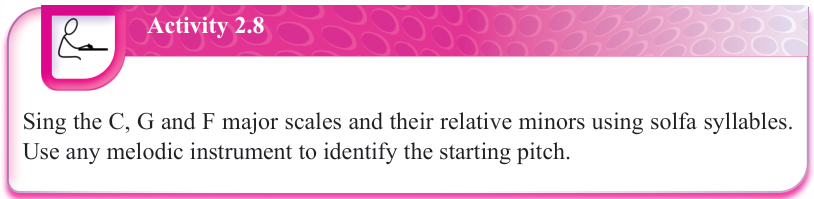
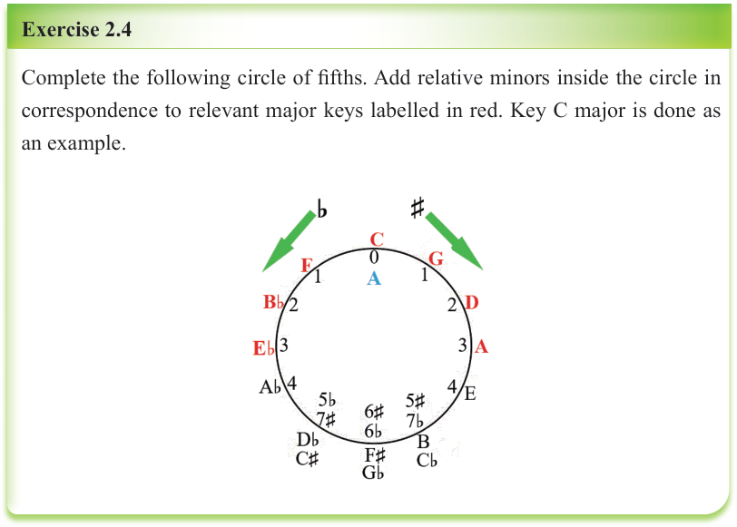
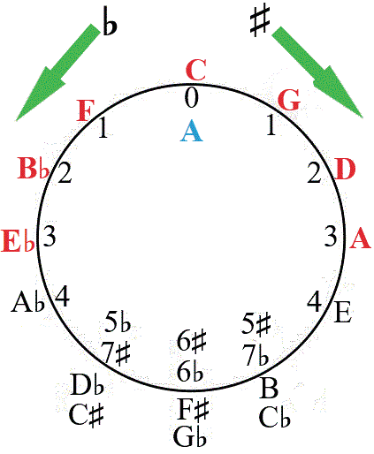

Activity 2.8
Sing the C, G and F major scales and their relative minors using solfa syllables.
Use any melodic instrument to identify the starting pitch.

Exercise 2.4
Complete the following circle of fifths.
Add relative minors inside the circle in correspondence to relevant major keys labelled in red.
Key C major is done as an example.

Types of minor scales
There are three types of minor scales. These are natural, harmonic and melodic minor scales. Just like major scales, each of these minor scales has a different arrangement of the whole and half steps. Note that the same steps used to construct major scales can also be applied to minor scales while following a specific interval pattern for constructing minor scales.
Natural minor scales
Natural minor scales follow the interval pattern of Tone, Semitone, Tone, Tone, Semitone, Tone, Tone. It is abbreviated as T-S-T-T-S-T-T. Note that a natural minor scale has the same notes as its relative major but the difference is just in